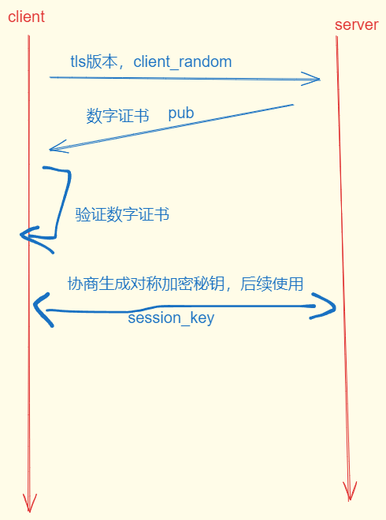
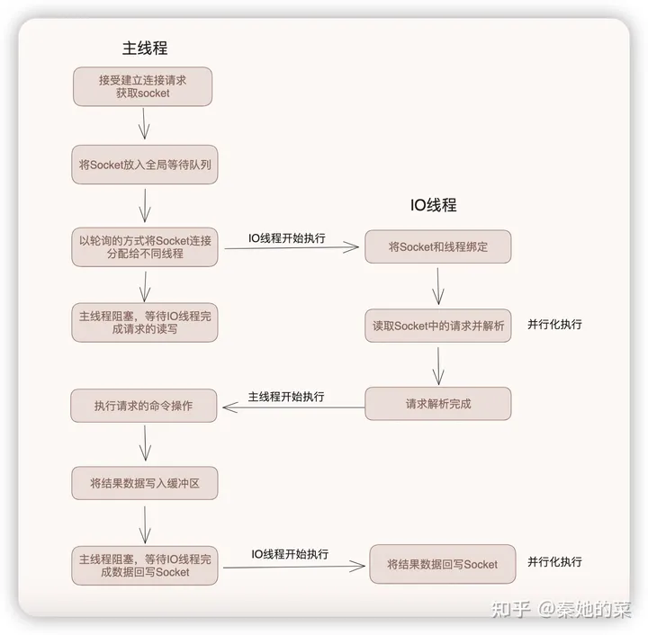

牛客网友_莉莉丝后端

文章目录
后端开发
作者：馋粉
链接：
https://www.nowcoder.com/discuss/578989153229029376?sourceSSR=search
来源：牛客网
自我介绍
-
解释一下虚拟地址是什么
解释一下虚拟地址是什么 这个我理解为，操作系统的内存结构和程序运行的虚拟地址，讲了虚拟内存，还提到了段页式内存地址转换 但是面试官可能想让我回答，一个几百 G 的游戏是怎么在只有几 G 的内存上运行的？ 答了从磁盘调入内存，内存再淘汰不常用的数据。 -
一个几百 G 的游戏是怎么在只有几 G 的内存上运行的？
用户态怎么切换到内核态？系统调用
c/c++编译完后，可执行文件的结构是什么样的？
-
进程和线程的关系
算法：介绍一下排序算法，比如快排
介绍一下 go 语言中的 channel -
TCP 和 UDP
数据库事务的属性
除了原子性都问了一遍性质和作用
事务隔离级别
事务隔离级别 读未提交（Read Uncommitted）： 事务可以读取其他事务未提交的数据，可能会出现脏读、不可重复读和幻读问题。 读已提交（Read Committed）： 事务只能读取其他事务已提交的数据，可以避免脏读问题，但可能会出现不可重复读和幻读问题。 可重复读（Repeatable Read）： 事务在同一事务中多次读取相同数据时保证结果一致，但仍可能出现幻读问题。
串行化（Serializable）： 最高隔离级别，事务串行执行，避免了脏读、不可重复读和幻读问题，但降低了并发性能
- redis 使用过那些数据结构，介绍一下持久化操作
rdb 和 aof
介绍一下 jwt，以及为什么使用 jwt ，有什么用？为什么以前浏览器使用的是 cookie + session ，改用 jwt 有什么好处？
jwt的载体是经过base64编码后的，当然可以解码得到信息，也可以选择其他方式编码，这也是为什么jwt不能放敏感数据的原因，如果要放则需要脱敏
JWT 如何防篡改
简单 token 的组成： uid(用户唯一的身份标识)、time(当前时间的时间戳)、sign（签名，token 的前几位以哈希算法压缩成的一定长度的十六进制字符串）
可以使用 HMAC 算法或者是 RSA 的公/私秘钥对 JWT 进行签名。因为数字签名的存在，这些传递的信息是可信的。
jwt = base64+hmac数字签名
- jwt 是明文的吗？
算是吧，jwt是用base64编码的，用base64解码后就知道里面的内容了,不过有一点 数字签名没有私钥是无法解密的
平常怎么进行并发编程
7. CA的TLS和SSL协议是什么，简述一下握手的过程？
握手的过程如下：
客户端访问服务器，发送ssl版本、客户端支持的加密算法、随机数等消息。服务器向客户端发送ssl版本、随机数、加密算法、证书（证书出现了）等消息。客户端收到消息后，判断证书是否可信，若可信，则继续通信，发送消息包括：向服务器发送一个随机数，从证书中获取服务器端的公钥，对随机数加密；编码改变通知，表示随后信息都将使用双方协定的加密方法和密钥发送；客户端握手结束通知。服务器端对数据解密得到随机数，发送消息：编码改变通知，表示随后信息都将使用双方协定的加密方法和密钥发送。
握手过程包括身份认证、密钥商定。整个握手过程在SSL/TLS协议中是至关重要的，它确保了客户端和服务器之间的安全通信。
|
|

“client hello"消息：客户端通过发送"client hello"消息向服务器发起握手请求，该消息包含了客户端所支持的 TLS 版本和密码组合以供服务器进行选择，还有一个"client random"随机字符串。
“server hello"消息：服务器发送"server hello"消息对客户端进行回应，该消息包含了数字证书，服务器选择的密码组合和"server random"随机字符串。
验证：客户端对服务器发来的证书进行验证，确保对方的合法身份，验证过程可以细化为以下几个步骤：
- 检查数字签名
- 验证证书链 (这个概念下面会进行说明)
- 检查证书的有效期
- 检查证书的撤回状态 (撤回代表证书已失效)
- “premaster secret"字符串：客户端向服务器发送另一个随机字符串"premaster secret (预主密钥)"，这个字符串是经过服务器的公钥加密过的，只有对应的私钥才能解密。
- 使用私钥：服务器使用私钥解密"premaster secret”。
- 生成共享密钥：客户端和服务器均使用 client random，server random 和 premaster secret，并通过相同的算法生成相同的共享密钥 KEY。
- 客户端就绪：客户端发送经过共享密钥 KEY加密过的"finished"信号。
- 服务器就绪：服务器发送经过共享密钥 KEY加密过的"finished"信号。
- 达成安全通信：握手完成，双方使用对称加密进行安全通信。
go channel 介绍：
channel 是一个通道，用于端到端的数据传输，这有点像我们平常使用的消息队列，只不过 channel 的发送方和接受方是 goroutine 对象，属于内存级别的通信。
可以实现多个协程的数据交流 (内存级别)
传统的线程通信有很多方式，像内存共享、信号量等。其中内存共享实现较为简单，只需要对变量进行并发控制，加锁即可。但这种在后续业务逐渐复杂时，将很难维护，耦合性也比较强。
后来提出了 CSP 模型，即在通信双方抽象出中间层，数据的流转由中间层来控制，通信双方只负责数据的发送和接收，从而实现了数据的共享，这就是所谓的通过通信来共享内存。 channel 就是按这个模型来实现的。
另外，channel 的使用将会引起 Go runtime 的调度调用，会有阻塞和唤起 goroutine 的情况产生。
关闭已关闭的通道？ panic
读关闭的 channel 能读吗？ 会返回 一个零值 和isclosed
写入关闭的 channel 能写吗？ panic
读关闭的空 channel 会发生什么？ 获得零值
|
|
go GMP模型
Goroutine的并发编程模型基于GMP模型，简要解释一下GMP的含义：
G:表示goroutine，每个goroutine都有自己的栈空间，定时器，初始化的栈空间在2k左右，空间会随着需求增长。
M:抽象化代表内核线程，记录内核线程栈信息，当goroutine调度到线程时，使用该goroutine自己的栈信息。
P:代表调度器，负责调度goroutine，维护一个本地goroutine队列，M从P上获得goroutine并执行，同时还负责部分内存的管理。
go垃圾回收
- 反问：如果入职主要做哪方面的工作？招聘信息上的“中台”是什么意思，后台和前台之间的中间？答：介绍工位。本质还是后台。
操作系统
- 知道那些进程调度算法？
- 死锁是什么？如果发生了死锁，应该怎么破解？
进程调度算法是操作系统中用于决定哪个进程应获得处理器资源（如CPU）的机制。常见的进程调度算法包括：
先来先服务（FCFS）：按照各个作业进入系统的自然顺序来调度作业，优点是简单公平，缺点是没有考虑到系统中各种资源的综合使用情况，对短作业来说等待时间过长。
短作业优先（SJ/PF）：对短作业（运行时间短）或短进程优先调度的算法。但是，在作业运行前，无法知道实际运行时间的长短，所以需要用户提交作业时同时提交作业运行时间估计值。
最高优先权优先（FPF）：为了照顾紧迫性作业，使之进入系统后便获得优先处理。当其用于作业调度时，将后备队列中若干个优先权最高的作业装入内存。
高响应比优先（HRN）：选择响应比最高的作业运行。响应比 = 1+作业等待时间/作业处理时间。
时间片轮转法（RR）：将系统中所有的就绪程序按照FCFS原则排成一个队列，每次调度将CPU分配给队首进程，让其执行一个时间片。
优先级调度：基于优先级的进程调度策略，多数实时系统采用基于优先级的调度。每个进程根据它重要程度的不同被赋予不同的优先级，调度器在每次调度时，总选择优先级最高的进程开始执行。
此外，还有一些其他的进程调度算法，如优先数调度、短进程优先（SPF）等。这些算法各有优缺点，适用于不同的场景和需求。在选择合适的进程调度算法时，需要考虑系统的特性和需求，以确保资源得到有效利用并提高系统性能。
死锁的必要条件包括四个方面：互斥条件、请求和保持条件、不剥夺条件和环路等待条件。
- 互斥条件：指一个资源每次只能被一个进程使用，即一个资源在一段时间内只被一个进程所占用。
- 请求和保持条件：指一个进程因请求资源而阻塞时，对已获得的资源保持不放。这个进程在等待未获得的资源，而已经获得的资源又不释放。
- 不剥夺条件：指已分配给进程的资源，在未使用完之前，不能被剥夺，只能在使用完时由自己释放。
- 循环等待：指在发生死锁时，必然存在一个进程-资源的环形链，即进程集合中的P0等待P1占有的资源，P1等待P2占有的资源，…… Pn等待已被P0占用的资源。
这四个必要条件必须同时满足才会发生死锁。为了预防死锁，可以破坏这些条件之一。例如，通过限制对资源的请求、预先分配资源、设置超时机制或使用锁管理器等方式来避免死锁的发生。
业务层面：
- 避免循环等待：对所有资源进行排序，并按照顺序请求资源。如果一个进程请求的资源被另一个进程占用，则该进程需要等待，但不允许出现循环等待的情况。
- 按需分配：每个进程在开始时只分配部分资源，只有在需要时才申请其他资源。这样可以减少资源浪费和冲突。
- 预先分配：在进程创建时即分配所需的全部资源。如果进程运行中发生死锁，则将所有资源回退到初始状态，然后重新进行资源分配。
- 破坏死锁条件：通过设置一些规则来破坏死锁的三个条件（互斥、占有和等待、非抢占），例如，允许抢占资源、设置超时机制等。
- 使用锁管理器：通过引入一个锁管理器来集中管理资源的锁定和解锁操作。这样可以避免多个进程直接互相等待对方释放资源。
检测与恢复：定期检测死锁并采取措施恢复。一旦检测到死锁，可以根据一定规则选择一个或多个进程回退，释放已占用的资源，以便其他进程可以继续执行。
Redis
使用过那些数据结构，怎么使用的？（菜菜项目里只会键值存储，不敢让面试官问了）
Redis 是使用单线程的吗？为什么连接 Redis 使用多线程，存储操作使用的是单线程
Redis为什么选择单线程？
准确的说，应该是Redis 4.0之前一直采用单线程
主要原因有：
使用单线程模型使Redis的开发和维护更简单
虽然使用的是单线程，但也可以并发处理多客户端的请求（IO多路复用和非阻塞IO）
对于Redis系统来说，主要的性能瓶颈是内存/网络带宽，而非CPU
Redis使用单线程也是有一定缺点的，比较典型的就是使用del指令删除大key数据时（比如包含了成千上万个元素的hash集合，关于大key的问题我们会在Redis系列的下一篇专门介绍，这里先简单举个例子），del指令就会造成主线程卡顿。
但是，Redis的多IO线程只是用来处理网络请求的，对于读写操作命令 Redis 仍然使用单线程来处理。这是因为，Redis处理请求时，网络处理经常是瓶颈，通过多个IO线程并行处理网络操作，可以提升实例的整体处理性能。而继续使用单线程执行命令操作，就不用为了保证Lua脚本、事务的原子性，额外开发多线程互斥加锁机制了（不管加锁操作处理），这样一来，Redis 线程模型实现就简单了。

数据库
数据库的日志有哪些？分别有什么用？
数据库的索引是什么？为什么快？
有没有定位过慢查询的问题？出现了慢查询该怎么解决？
TODO
https://www.nowcoder.com/discuss/570074756708401152?sourceSSR=search
文章作者 lyr
上次更新 2024-01-31